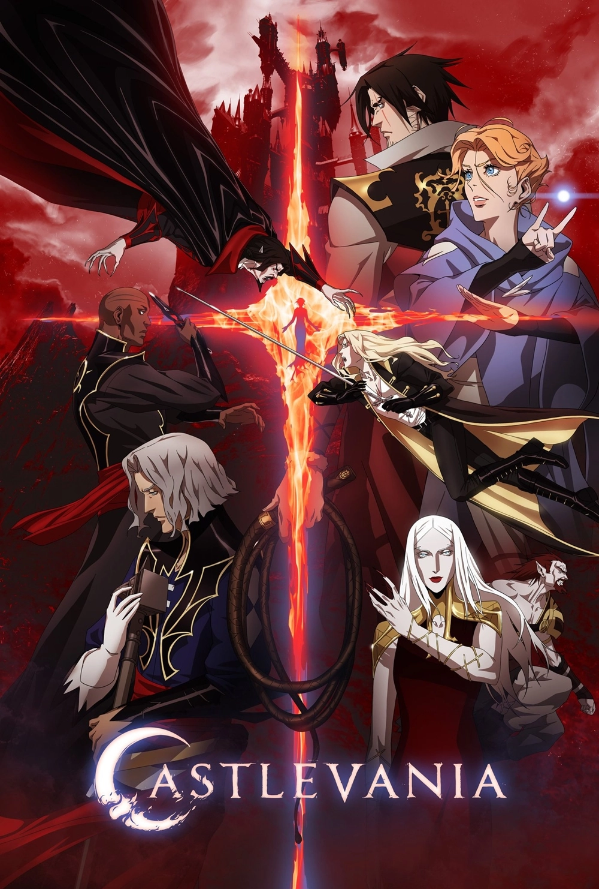
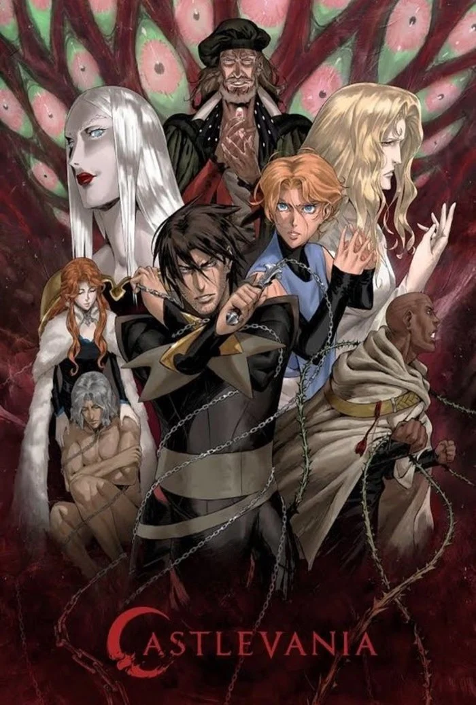
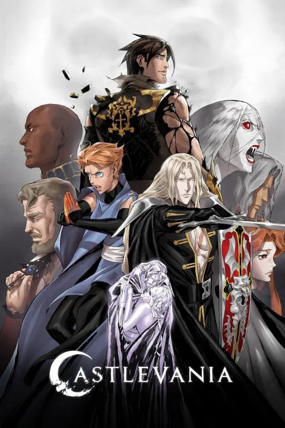
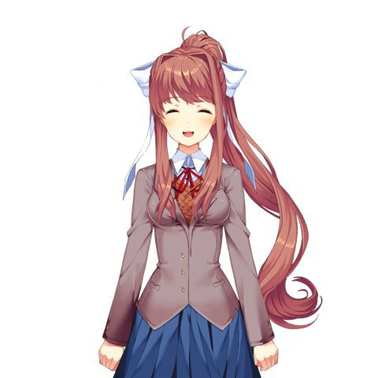
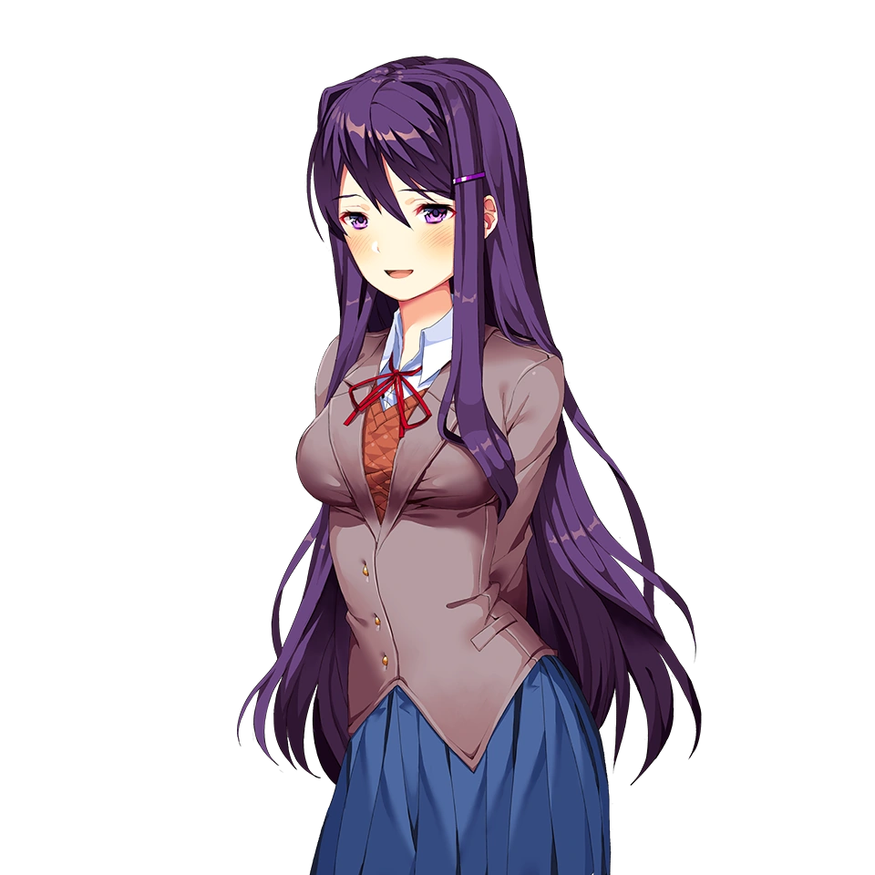
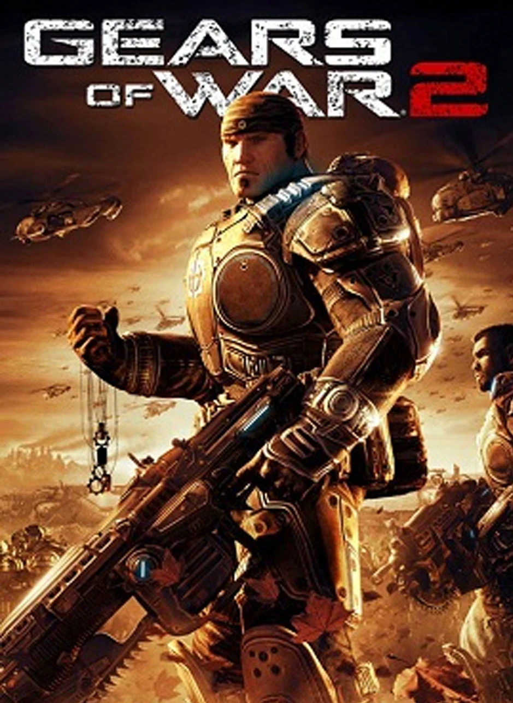
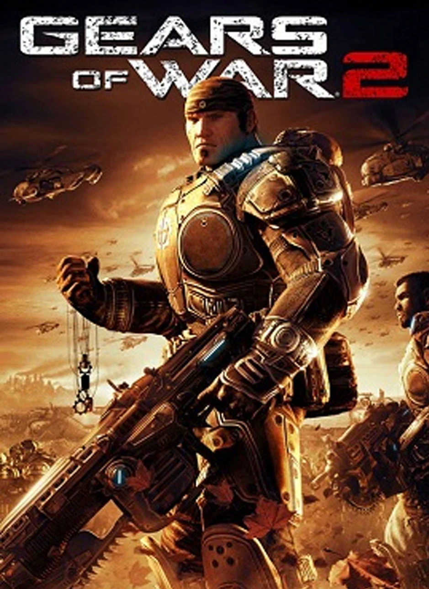

Un cazador de vampiros lucha para salvar a una ciudad asediada de un ejército de bestias de otro mundo controladas por Drácula.
La serie Castlevania trata sobre una guerra entre los descendientes de la familia Belmont y el conde Drácula. Cada cien años, Drácula resucita y es la labor del clan Belmont derrotarlo antes de que cause mucho dolor y sufrimiento.
Castlevania segunda temporada
La temporada 2 de Castlevania comienza poco después del asedio de las fuerzas de Drácula a Gresit. Tras un épico combate entre Trevor Belmont y Alucard, los dos guerreros y la maga Sypha Belnades unen fuerzas para hacer frente a Drácula y evitar el genocidio de toda la humanidad.

Castlevania tercer temporada
'Castlevania' temporada 3 inicia con Drácula muerto y nuestros personajes en caminos diferentes. Alucard, viviendo en el castillo abandonado de su padre y custodiando los secretos que dejó. Trevor y Sypha recorriendo el mundo, cazando las abominaciones restantes

Castlevania cuarta temporada
La historia de la temporada 4 de Castlevania arranca con Trevor y Sypha en su constante viaje en busca de su lugar en el mundo, mientras Alucard sigue hastiado en su castillo, hasta que unos aldeanos le piden ayuda. Para su propia sorpresa, decide ayudarlos

Doki Doki Literature
Monika
Monika (モニカ - significa "tutor" o "consejero") es la chica de portada y la antagonista principal en Doki Doki Literature Club! y Doki Doki Literature Club Plus!. Es la fundadora y presidenta del club de literatura. No se le puede escribir poemas si no hasta la parte final del juego.

Yuri
Yuri (百合 - "lirio") es una de los cuatro personajes principales del juego y vicepresidenta del club de literatura en el Acto 2. También es una de las tres chicas a la que se le puede escribir poemas.

Sayori
Sayori (小夜里/さより - "pueblo") es uno de los cuatro personajes principales y una de las tres chicas a la que el jugador le puede escribir poemas. Es la amiga de la infancia del Protagonista y vicepresidenta del Club de Literatura.
Natsuki
Natsuki es aparentemente una chica impetuosa, directa y arrogante, pero internamente amable y dulce, como resultado de su inseguridad. Está basada en el arquetipo anime de una tsundere.


 
